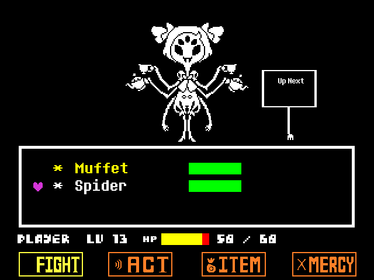

A Spider's Revenge
Premise
You find yourself near the end of your battle with Muffet. The pastry-baking spider monster has chosen to spare you, as you have surprisingly not hurt a single spider on your rampage throughout the Underground. However, a choice presents itself to you. Standing right there holding a sign is a normal everyday spider. Should you leave it be, you can continue along with your sadistic journey, but should you attack it, well... that would unleash A Spider's Revenge.

Overview
A Spider's Revenge is a full-length boss encounter created in Unitale-CYF, a Unity based engine that mimics the Undertale encounter mechanic by utilizing the Lua scripting language. The encounter will take place during the "Genocide Route" of the main game and expand upon the existing encounter with Muffet. The goal is to replicate Genocide Route encounters in the main game as faithfully as possible. This includes new animations, waves, and music.
Preview
Designs
Below are some early notes and diagrams for the more flashy waves.